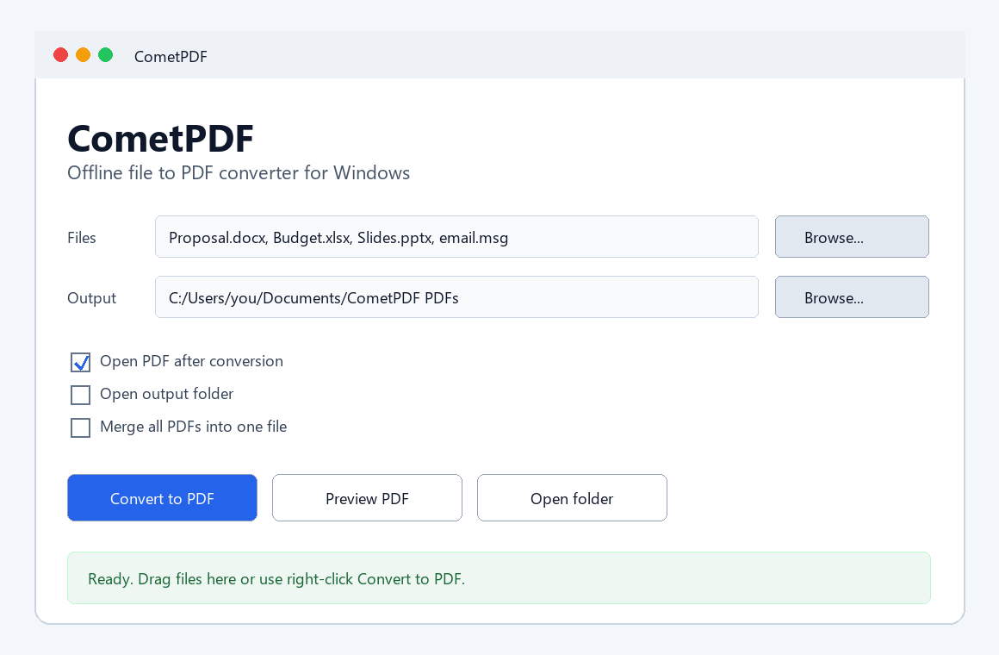

CometPDF turns Office files, images, Outlook emails, text files, and existing PDFs into clean PDF documents on Windows. It also exports PDFs to PNG, JPG, TXT, Word, and PowerPoint for simple reverse PDF conversion. No uploads. No account.
Microsoft Store distribution is being prepared. Installer is recommended for Desktop, Start Menu, uninstall, and optional right-click conversion. Portable ZIP runs without setup.
Installer checksum is published on the Security page. This unsigned first release may show an unknown publisher warning in Windows or Chrome. SHA256: 947E4F4BCD01C02F95D9448F774B0F8487D9C178AD1E39E1C750EE7F25E6DBCF
Windows may warn you before installing
CometPDF is not yet code-signed, so Windows SmartScreen or Chrome may show an "unknown publisher" warning when you download or run the installer.
This is expected. The installer has 0 detections on VirusTotal across 70 antivirus engines. To proceed: click More info → Run anyway.
If you prefer to skip this entirely, use the Portable ZIP — no installation, no warning.

Files stay on the computer. CometPDF is built for people who do not want to upload contracts, emails, invoices, or internal documents to online converters.
When Word, Excel, PowerPoint, Outlook, or LibreOffice are installed, CometPDF uses them for print-like PDF conversion.
Add many files, choose an output folder, convert them in one run, and optionally merge everything into one PDF.
Use CometPDF as a reverse PDF converter too: export PDFs to PNG or JPG images, extract text to TXT, create PowerPoint slides from PDF pages, or preserve PDF pages visually inside Word documents.
Built for everyday office work, email archiving, reverse PDF conversion, and quick PDF delivery.
CometPDF is being prepared for Microsoft Store submission. When it is approved, this page will link to the Store as the recommended install path.
The direct Windows installer remains available for users who prefer a classic setup file or need right-click conversion integration.
The portable version can run without installation and is useful for quick testing or locked-down workstations.